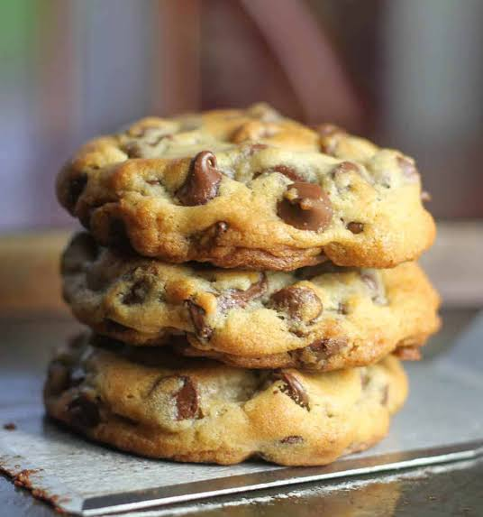

Chocolate Chip Cookies

Description
A chocolate chip cookie is a classic American treat defined by its contrasting
textures: crispy, golden-brown edges and a soft, chewy center. It features a
buttery, sweet dough studded with melted chocolate chips, offering the perfect
balance of caramelized flavors and rich, decadent chocolate.
Ingredients
- unsalted butter
- granulated white sugar
- brown sugar
- eggs
- vaniila extract
- all-pupose flour
- baking soda
- salt
- chocolate chips
Steps
- Cream the fats and sugars
- Melt or soften your unsalted butter.
- Combine the butter with both white and brown sugars.
- Beat thoroughly until the mixture is smooth and fully incorporated.
- Introduce liquids and aromatics
- Whisk in the eggs one at a time.
- Pour in the vanilla extract.
- Mix vigorously until the wet base becomes slightly pale and thickened.
- Incorporate dry ingredients
- Whisk together the flour, baking soda, and salt in a separate bowl.
- Add this dry mixture to your wet base.
- Fold gently using a spatula just until the flour streaks disappear.
- Fold in chocolate and chill
- Pour in your chocolate chips or chunks.
- Distribute evenly throughout the dough without overmixing.
- Chill the dough in the refrigerator for at least 30 minutes to enhance flavor and prevent excessive spreading.
- Portion and bake
- Preheat your oven to 350°F (175°C).
- Scoop the dough into equal-sized balls onto a lined baking sheet.
- Bake for 9 to 11 minutes until the edges are golden but the centers remain soft.
- Cool on the pan for 5 minutes before transferring to a wire rack.
Home